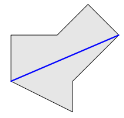
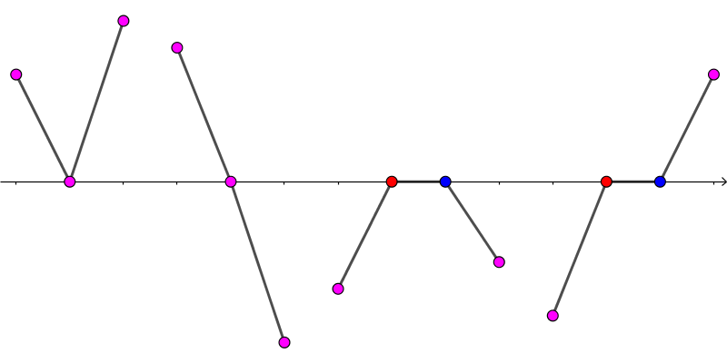

给定一个简单多边形，求一条最长的线段，使得它完全包含在多边形内 (含边界)。
第一行包含一个正整数 $n$ ($3 \leq n \leq 200$)，表示多边形的点数。
接下来 $n$ 行，每行两个整数 $x_i, y_i$ ($-10^6 \leq x_i, y_i \leq 10^6$)，描述多边形的一个顶点，所有顶点以逆时针顺序给出。保证给出的多边形为简单多边形且相邻两条边不共线。
输出一行一个实数，表示最长的线段的长度。答案被认为正确当且仅当相对或绝对误差不超过 $10^{-6}$。
容易使用调整法证明：最长的线段一定经过原多边形的两个顶点 (但并不一定以它们为端点)。
因此我们枚举多边形的两个点 $P, Q$，考虑计算经过 $P, Q$ 的线段的长度最大值。
设经过 $P, Q$ 的直线的方程为 $A x + B y + C = 0$。那下面我们丢掉 $P, Q$ 两点，直接讨论 $A x + B y + C = 0$ 与多边形的相交情况。
不失一般性，假设 $A = C = 0, B \neq 0$，即该直线为 $x$ 轴。
首先，我们可以得到多边形的每个点在 $x$ 轴上方 (上半平面)，$x$ 轴下方 (下半平面) 还是 $x$ 轴上。
对于一条线段 $PQ$，如果它经过了 $x$ 轴但不以 $x$ 轴上的点为端点 (即穿过了 $x$ 轴)，设 $PQ$ 与 $x$ 轴交于点 $R$，然后将线段 $PQ$ 拆成 $PR$ 和 $RQ$。
现在，多边形上的所有线段分为两类：不经过 $x$ 轴的和以 $x$ 轴上的点为端点的。显然前者是不影响答案的，因此我们只需考虑以 $x$ 轴上的点为端点的线段。
将所有线段按照「在 $x$ 轴上的端点的横坐标」排序，由多边形的性质知 $x$ 轴上的每个点至少是两条线段的端点。可能的情形一共有这么几种：
特别地，(左数) 第一种情形可以看成是中间部分宽度为 $0$ 的第三种情形，第二种情形可以看成是中间部分宽度为 $0$ 的第四种情形。
因此我们只需讨论第三种情形和第四种情形即可 (当然第三种情形也可以是两侧都在上方的，第四种情形也可以是左侧在上方，右侧在下方的)。
对于第三种情形：
若红点左侧邻域在多边形内，则整条线段和蓝点右侧邻域也在多边形内。(没有边界点)
若红点左侧邻域在多边形外，则该线段在多边形内，蓝点右侧邻域在多边形外。(红点和蓝点都是边界点)
对于第四种情形：
若红点左侧邻域在多边形内，则该线段在多边形内，蓝点右侧邻域在多边形外。(蓝点是边界点)
若红点左侧邻域在多边形外，则整条线段和蓝点右侧邻域都在多边形内。(红点是边界点)
最终得到所有的边界点后，容易发现边界点的总数一定是偶数，因此第 $1 \sim 2, 3 \sim 4, \cdots$ 个边界点之间是多边形内的部分，分别计算长度取 $\max$ 即可。
现在我们解决了 $x$ 轴的情形，对于其它直线的情况，我们相当于要在那条直线上建立数轴 (即那条直线上的坐标)，对于直线 $A x + B y + C = 0$，我们可以定义直线上的点 $\left( x, y \right)$ 的坐标为 $B x - A y$，这样无论直线平行于 $x$ 轴还是 $y$ 轴它都是良定义的。
而对于该直线和另一条直线 $A' x + B' y + C' = 0$ 的交点，计算可得得它的相对坐标为 $$ \frac {\left( A^2 + B^2 \right) C' - \left( A A' + B B' \right) C} {A B' - A' B} $$
接下来使用 $x$ 轴时的方法即可，总时间复杂度 $O \left( n^3 \right)$。
#include <bits/stdc++.h>
using std::cin;
using std::cout;
typedef long long ll;
typedef __int128 lll;
typedef std::pair <double, int> pr;
const int N = 216;
struct vec2 {
int x, y;
vec2 (int x0 = 0, int y0 = 0) : x(x0), y(y0) {}
friend std::istream & operator >> (std::istream &in, vec2 &B) {return in >> B.x >> B.y;}
inline ll operator ^ (const vec2 &B) const {return (ll)x * B.y - (ll)y * B.x;}
} p[N];
struct line {
ll A, B, C;
line (ll A0 = 0, ll B0 = 0, ll C0 = 0) : A(A0), B(B0), C(C0) {}
line (const vec2 &u, const vec2 &v) : A(u.y - v.y), B(v.x - u.x), C(u ^ v) {} // left > 0
inline ll operator () (const vec2 &P) const {return A * P.x + B * P.y + C;}
} L[N];
int n;
int sign[N];
pr a[N];
double sp[N];
inline void up(double &x, const double y) {x < y ? x = y : 0;}
inline double intersection_rel(const line &u, const line &v) {return double(lll(u.A * u.A + u.B * u.B) * v.C - lll(u.A * v.A + u.B * v.B) * u.C) / (u.A * v.B - u.B * v.A);}
double solve(const line &l) {
int i, m = 0, c = 0; ll r; double ret = 0;
for (i = 0; i <= n; ++i) r = l(p[i]), sign[i] = (r < 0 ? -1 : r > 0);
for (i = 0; i < n; ++i)
if (sign[i] && sign[i] + sign[i + 1] == 0)
a[m++] = pr(intersection_rel(l, L[i]), 0);
else if (!sign[i] ^ !sign[i + 1]) {
vec2 &z = p[i + !!sign[i]];
a[m++] = pr(l.B * z.x - l.A * z.y, sign[i] + sign[i + 1]);
}
std::sort(a, a + m);
for (i = 0; i < m; ++i)
if (!a[i].second) sp[c++] = a[i].first;
else {
assert(++i < m);
if (a[i - 1].second == a[i].second) {
if (!(c & 1)) sp[c++] = a[i - 1].first, sp[c++] = a[i].first;
} else if (a[i - 1].second + a[i].second == 0)
sp[c] = a[i - !(c & 1)].first, ++c;
else throw "error";
}
assert(!(c & 1));
for (i = 0; i < c; i += 2) up(ret, sp[i + 1] - sp[i]);
return ret / hypot(l.A, l.B);
}
int main() {
int i, j; double ans = 0.;
std::ios::sync_with_stdio(false), cin.tie(NULL);
cin >> n;
for (i = 0; i < n; ++i) cin >> p[i];
p[n] = *p;
for (i = 0; i < n; ++i) L[i] = line(p[i], p[i + 1]);
for (i = 0; i < n; ++i) for (j = i + 1; j < n; ++j) up(ans, solve(line(p[i], p[j])));
cout << std::setprecision(12) << ans << '\n';
return 0;
}
坑1：计算交点坐标时分子可能爆 long long，因此需要使用 __int128 或提前转 double。
坑2：定义直线上的 (相对) 坐标时可以用 $B x - A y$，一来计算方便，二来也可以避免对直线平行于坐标轴的讨论。